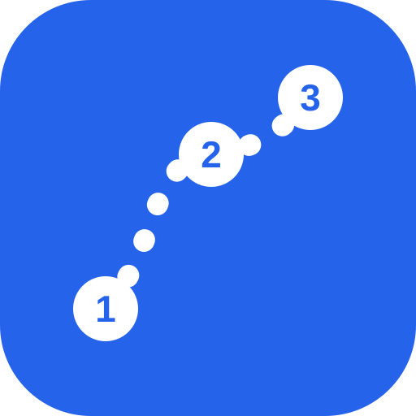

选好想去的地方，帮你分好每一天、排出最顺的路线，还会建议住哪一区最方便。
地图 © OpenStreetMap 贡献者 · 照片来自维基共享资源全部免费服务 · 行程只存在你的手机里
选好城市后，会先帮你找出那边的热门景点。
从热门景点挑，或自己搜索。点照片可以看介绍和位置。顺序和哪天去都不用管，会自动帮你排。
已经订好就直接搜索酒店；还没订的话，看看下面的建议，住在哪一区去这些地方最顺。
也可以关掉这个窗口，在地图上长按选择地点。
不要的按 ✕ 拿掉。加入后还可以在「已添加」里移除。
Google Maps 一次最多带 3 个途经点，所以分成几段。走完一段再按下一段。
门票估计 = 每个地点填的票价 × 人数。票价在地点的「编辑」里填。
说明：存的是地图本身。没网络时还是能看地图和已经排好的路线；搜索、照片和重新计算路线需要网络。
按「导航」时会打开这个 App。之后可以在右上角 ⋯ 里改。
从小红书、文章、聊天里复制一整段都可以：一行一个、用逗号或「、」分开、或一串 Google Maps 链接。会帮你找出来，再让你确认。